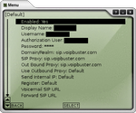
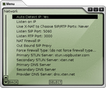

Voipbuster
Archivierte Anleitung
Dieser Artikel wurde archiviert, da er - oder Teile daraus - nur noch unter einer älteren Ubuntu-Version nutzbar ist. Diese Anleitung wird vom Wiki-Team weder auf Richtigkeit überprüft noch anderweitig gepflegt. Zusätzlich wurde der Artikel für weitere Änderungen gesperrt.
Anmerkung: Der Dienst ist schon lange nicht mehr kostenlos, der Seitenname ist falsch gewählt.
Dieser Artikel wurde für die folgenden Ubuntu-Versionen getestet:
Dieser Artikel ist mit keiner aktuell unterstützten Ubuntu-Version getestet! Bitte diesen Artikel testen und das getestet-Tag entsprechend anpassen.
Zum Verständnis dieses Artikels sind folgende Seiten hilfreich:
Mit der Software X-Lite ist es möglich den Dienst von Voipbuster zu nutzen. Voipbuster bietet einen Service an, mit dem man kostenlos über VoIP in 39 Länder (jeweils deren Festnetz) telefonieren kann. (unter anderem Österreich. Vorsicht: Deutschland und USA sind nicht mehr dabei!) Einzige Bedingung um unbegrenzte Telefonate führen zu können, ist die Tatsache, dass 10€ auf dem Kundenkonto liegen müssen. Seit neuestem beschränkt sich das Wort "kostenlos" auf 300 Minuten an Telefonaten in der Woche. Überschreitet man dieses Kontingent, dann zahlt man 1 cent/Minute für Telefonate in die "kostenlosen" Ländern. (Restguthaben kann nicht in die Folgewoche übernommen werden) Lädt man kein Guthaben hoch, sind die kostenlosen Gespräche auf eine Minute begrenzt. Man kann allerdings so oft man möchte hintereinander die gleiche Nummer anrufen. Es gibt nun auch 2 weitere Dienste, die in etwa die selbe Software nutzen. Unterschied ist, dass sie Deutschland noch kostenlos erreichen können. Alle anderen Bedingungen sind identisch. Es handelt sich hierbei um Sparvoip und Voipstunt. Allerdings ist zu befürchten, dass Deutschland auch hier bald herausfallen wird.
Installation¶
X-Lite kann hier heruntergeladen werden. Das heruntergeladene Archiv muß entpackt werden und am Besten nach /usr/local/bin kopiert [1] werden.
tar xzvf X-Lite_Install.tar.gz cd xten-xlite/ sudo cp xtensoftphone /usr/local/bin
Jetzt kann das Programm mit xtensoftphone aus der Konsole [1] gestartet werden, oder man legt einen Anwendungsstarter an: Rechtsklick auf das Panel -> "Zum Panel hinzufügen... -> Anwendungsstarter". Hier sind folgende Parameter wichtig:
Name: X-Lite
Allgemeiner Name: X-Lite
Kommentar: Phone Software
Befehl: xtensoftphone
Typ: Anwendung
Wenn X-Lite nicht startet, sondern sich mit dieser Meldung beendet
Der Kindprozess ... kann nicht gestartet werden.
dann muss das Paket
libstdc++5
nachinstalliert [2] werden.
X-Lite für Voipbuster konfigurieren¶
| Nach Programmstart gehen entweder sofort die Einstellungen für den SIP Proxy auf oder sie müssen wie folgt gestartet werden | |
| Nun geht es in den Bereich: System Settings -> SIP Proxy. Dort folgendes einstellen: |  |
| Nun in ein weiteres Einstellungsmenü wechseln: System Settings -> Network. Dort folgendes einstellen (Es ist zu beachten, dass die Ports gezeigten Screenshot den jeweiligen Firewall-Einstellungen angepasst werden müssen.): |  |
| Wenn alles geklappt hat, sollte nach einem Neustart folgendes Bild zu sehen sein (Wichtig ist hierbei die Zeile: "Logged in"): |


- Erstellt mit Inyoka
-
 2004 – 2017 ubuntuusers.de • Einige Rechte vorbehalten
2004 – 2017 ubuntuusers.de • Einige Rechte vorbehalten
Lizenz • Kontakt • Datenschutz • Impressum • Serverstatus -
Serverhousing gespendet von